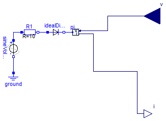
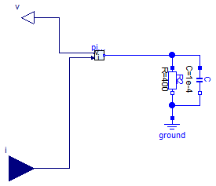

For all models in this package an FMU must be generated
Extends from Modelica.Icons.Package (Icon for standard packages).
| Name | Description |
|---|---|
| HalfCircuitWithDiode | |
| HalfCircuitWithLoad |

Extends from Modelica.Blocks.Interfaces.BlockIcon (Basic graphical layout of input/output block).
| Type | Name | Description |
|---|---|---|
| input RealInput | v | Potential at the pin as provided from the outside |
| output RealOutput | i | Current flowing in to the pin as provided to the outside |

Extends from Modelica.Blocks.Interfaces.BlockIcon (Basic graphical layout of input/output block).
| Type | Name | Description |
|---|---|---|
| input RealInput | i | Current flowing in to the pin as provided from the outside |
| output RealOutput | v | Potential at the pin as provided to the outside |